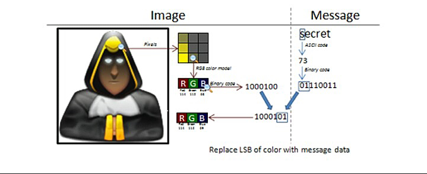
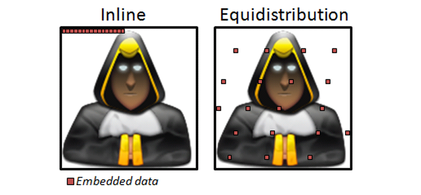
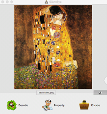

Se nonostante utilizzassimo tutte le precauzioni dovesse succedere di essere accusati,
tutti gli apparecchi informatici per una ragione o per un'altra possono essere sequestrati.
L' INFORMATICA FORENSE è la branca dell'informatica che studia metodi per trovare informazioni
di qualunque tipo all'interno di un dispositivo informatico.
Questa pratica ha avuto molto successo poiché si possono recuperare una mole di file di ogni genere.
Abbiamo paarlato di protocolli sicuri (SSL/TLS). La crptazione può essere usata non solo alla conessione ma anche nei messaggi che noi scambiamo con alri utenti.
Quando si parla di crittografia non si può fare a meno di PGP, esso è una strumento che cifra testi,
email, file e directory aumentando di gran lunga la propria sicurezza.
Il suo funzionamento il è seguente: l'utente cifra il messagio creando 2 chiavi:
La chiave pubblica è quella che permette a chiunque di inviarti un messagio,
La chiave privata è invece l'unica in grado di sbloccare e quindi leggerlo.
La communicazione tra oubblica/privata è anche conosciuta come Crittografia Asimmetrica(o Diffie ed Hellman)
mentre l'uso di una sola (PGP comunuqe la usa) si definisce Crittografia Simmetrica.
GNU Privacy Guard è un tool disponibile per Win, Osx, Linux e BSD.
GPG viene fornito, oltre che in versione CLI, anche sotto diverse vesti:
>
In questa parte della guida impareremo a creare le nostre chiavi pubbliche e private, cosi da ricevere e
leggere messagi cifrati.
Presupponendo che stai utillizando TAILS è possibile usare la GUI di GPG cliccando sull'icona,
e quindi la voce "Manage keys".
Clicchiamo ora su File---->New(CTRL+N) e clicchiamo su PGP Keys.
Ora definiamo il nome (Full name) e indirizzo Email. Cliccando su Advanced Key possiamo usare
chiavi (RSA consigliata) con la quale sarà criptata (4096 è consigliata)
Quindi ora definiamo la passphrase e clicchiamo su Create.
Se apriamo il terminale possiamo lanciare il seguente commando:
$ gpg --gen -key
Ci verrà chiesto che tipo di chiave vogliamo scegliere, la lunghezza di essa ed un eventuale scadenza.
Poi e-mail e nome, proprio come nella GUI.
>Riassumendo
Tra esse esiste una relazione che vi spiegherò cosi:
Una chiave pubblica può essere decriptata sola dalla relativa chiave privata
Per poter esesere utilizzato con altre persone è neccesario Importare la chiave pubblica del destinatario.
In GUI è molto semplice basta fare click su File---->Import oppure CTRL+T
Da terminale invece basta lanciare:
$ gpg --import[nome del file]
Per esportare una chiave, magari la nostra stessa chaive bisogna fare click sulla voce File---->Export (sostituire ID con la UserID).
Da terminale basta lanciare:
$ gpg --export [ID]
È possibile anche revocare una chiave privata nel caso persa o nei peggiori dei casi violata. Questa voce (e anche le prossime) è disponibile in "Dettagli" di ogni chiave.
Da terminale basta lanciare
$ gpg --output revoke.key --gen-key[ID]
Importiamo il certificato di revoca dal terminale:
$ gpg --import revoke.key
Se abbiamo sincronizzato la chiave con i keyserver bisogna resincrinizzare il tutto:
$ gpg --send-keys -keyserver hkp://subkeys.pgp.net[ID]
In fine aggiorniamo il nostro portachiavi
$ gpg --refresh-keys --keyserver hkp://subkeys.pgp.net
Per elimininazione di una chiave
$ gpg --delete-secret-and-pubblic-key
E probabile aver bisogno di una lista di tutte le nostre chiavi
$ gpg --list-keys
Nel caso avessimo bisogno di inviare un testo cifrato potremmo utillizare il seguente commando:
$ gpg --encrypt --recipient [destinatario] message.txt
In questo esempio message.txt sarà un file in formato .txt, mentre se volessimo cifrare il contenuto
.txt, verrà generato il file .txt.gpg- Questo potrà essere inviato come allegato ma se non
ci è permesso.
Dovremmo generare un output con codifica ASCII, usando quindi il parametro --armor:
$ gpg --armor --ebcrypt --recipient[destinatario] [file]
Il file generato sarà message.txt.asc, contenente il valore ASCII.
Ora procediamo a decifrare il contenuto, il parametro sarà --decrypt:
$ gpg --output output.txt --decrypt message.txt
Dove output sarà il messagio in chiaro e message.txt il testo cifrato. Se presente GPG, chiederà la passphrase.
$ gpg --clearsign --armor --encrypt --recipient [destinatario] [file]
Analoglamente alla cifratura, è possibile verificare la firma
$ gpg --verify [file]
OpenPGP permette non solo di cifrare ma di firmarli.
Cosa serve
Nel caso che tu stia parlando con un tuo amico e questo viene attacato/violato, noi non sapremmo se è realemente lui
scriverci quelle cose o meno. L'essere a conoscenza della nostra chiave pubblica non ci assicura che sia lui
il nostro interlocutore.
Vediamo come comportarci: il comando per firmare con la prova della chiave si fa usando il paramentro -s(o --sign):
$ gpg -s[file]
Di solito il comando comprime anche il file, per poterlo leggere si usa il seguente commando:
$ gpg --clearsign [file]
Crittografare un email non solo è utile per evitare che qualcuno monitori la tua connessione, ma anche che
qualcuno acceda alla tua posta e riesca a leggere il contenuto crittografato.
È inutile dire che se il nostro scopo è l'anonimato, di non usare i servizi di mailing con accesso sulla Clearnet(Gmail,Yahoo,Hotmail,Liber etcc..)
ma affidati a quelli che consentono l'accesso con VPN e nodi di TOR.
una seconda considerazione (abbastanza ovvia) è non usare la stessa chiave usata per l'anonimato sulla propria mail,
o comunque un accesso almeno una volta senza le dovute precauzioni poiche pottrebbero risalire alla tua persona
Ci sono diversi strumenti che ci consentono di farne uso. Di seguito ne troverete alcuni:
Enigmail: estensione per Thunderbird e SeaMonkey, necessita di GnuPG
già installato.
Mailvelope: estensione che consente di usare la criptazzione all'interno
delle webmail come Gmail, Yahoo, Outlook tramite Chrome e Firefox.
APG: disponobile per Android, permette di integrare GPG facilmente nei
file e nelle mail.
SecureGmail: estensione che permette di mettere al sicuro le mail dei servizi
GMail e di tutti i sistemi basati sulle GApps.
All'interno di Tails troveremo Icedove: creato da Mozilla Foundation e ribrandizzato in salsa Debian, è un client di posta Thunderbird-based che integra già Enigmail (per la cifratura e decifrattura) e TorBirdy, estensione per integrare facilmente il programma coi nodi di Tor.
Utlizando questa custom è facile fare le dovute prove: per ogni mail sarà possibile attivare "Enigmail" semplicemente selezionandolo come per le funzioni di firma e cifratura PGP.
Sarebbe assurdo se dopo tutta sta paranoia lasciassimo le chiavi di decriptazione li in bella vista sul PC non pensate?
Ecco perché, in caso di visite non gradite bisogna essere pronti a nascondere tutto (se non distruggere), ecco che un sopporto removibile sarebbe bella cosa come ad esempio una USB se non addiritura una microSD (per la sua grandezza sarebbe molto più facile nasconderla).
La crittogarfia del disco può essere applicata su l'intero disco o su una parte di essa, questa funzione è disponibile per qualsiasi O.S:
Come per la crittografia a livello client, se perdi la tua chiave non ce modo per recuperarla ti rimane solo la
formattazione del disco e reinstallare O.S.
Inoltre ogni O.S gestisce la criptazione del disco in modo diverso se Bitlocker e le partizioni possono essere
applicate facilmente su Linux e un po' più confusionaria la cosa
TruCript ha scritto un pezzo di storia poiché ha semplificato la vita a molti dando la possibiltà
di cifrare il disco senza essere dei tecnici informatici
Il progetto è stato abbandonato nel 2014 con la fine definitiva al supporto windows XP ma e ancora disponibile
per chi ne avesse il bisogno.
Per fortuna esistono una serie di fork che ne risolvono i limiti e problemi. TreuCript offre le seguenti:
Prima di procedere alcune raccomandazioni e controindicazioni generali, non valgono sempre ma è giusta dargli voce:
A prendere le redini di questo programma troviamo senza dubbio VeraCrypt, disponibile per tutti i maggiori O.S e retrocompatibile con TrueCrypt. Il programma si presenta in maniera user-friendly e pertanto molto facile.
Ecco quali saranno i passaggi per creare una partizione o un contenitore
Il volume ora e creato
Procederemo ora al montaggio dei drive o dei file, in base a ciò che avete scelto
Nel mondo GNU/Linux spopola un tool chiamato Zulucrypt.
Il suo punto di forza non è solo quello di essere compatibile con gli altri tool già citati ma anche con LUKS,
un metodo di cifratura appartenente alla famiglia Linux.
LUKS è visto come uno standard nell'ambiente del pinguino, quindi è giusto sapere che esiste ed eventualmente come
interagirvi: nell'ambiente Windows esiste un tool FreeOTFE mentre su
OSX esisteva OSXCrypt ma ormai sembra abbandonato.
Tornando al mondo Linux è il modulo dm-crypt che si uccupa di offrire supporto a LUKS, questo modulo è presente
in quasi tutte le dsitribuzioni GNU/Linux. Tuttavia dm-crypt risulta abbastanza complesso per un utente alle
prime armi, mentre potremmo utillizare un tool chiamato cryptosetup esso sfrutta sempre il modulo dm-crypt.
La steganografia è una tecnica utillizata per nascondere messagi all'interno dei contenitori che a una prima occhiata possono sembrare innocui.
Nell'informatica la steganografia più comune risiede dentro una tecnica indentificata come
LSB (Least Significant Bit,ovvero bit meno significativo) questa si basa sul modificare una foto, un video,
un audio con un piccola porzione che contiene un'informazione.
Immaginamo di prendere una foto da 1920x1080, questa immagine contiene 2 milioni di pixel,
chi penserebbe che tra uno di questo ci possa essere un'informazione? Bisognerebbe ingrandire pixel per pixel
o sapere la posizione. A questo si aggiunge che molti tools usano algoritmi per "rompere" un pixel.
I programmi di questo tipo integrano una serie di cifrari per rendere impossibile anche ad uno scanning di
riuscire a decifrare il contenuto.
Tuttavia questo non vuol dire che e immune agli attacchi:la steganal
Il mondo della steganografia offre diversi tools, vediamone alcuni:
Alla lista aggiungiamo SilentEye, che impareremo a scoprire e ad utilizzare nelle prossime righe.
SilentEye è un software multipiattaforma e liberamente scaricabile dal sito ufficiale.
Il programma, come gli altri, è in grado di nascondere messagi o file dentro immagini JPEG
e MBP e all'interno di file audio WAFE. Offre anche chiavi di cifratura AES a 128 e 256 bit.
Il programma offre un algoritmo di ricerca per capire quali pixel modificare affinché risultino innocui.
Gli svilluppatori hanno voluto spiegare il tutto usando una semplice foto:

Come possiamo vedere viene estratto un campione 3x3 pixel da una porzione d'immagine: il campione viene tradotto
in codice binario e viene effettuata una modifica ai bit che contengono il codice del colore.
Questa modifica consiste nel nell'inserire al suo posto il formato binario del codice ASCII che compone il
messaggio. Per fare in modo che i pixel subisocno evidenti modifiche (tipo coi caratteri speciali) verranno
distribuite in l'immagine.
Come nell'esempio qui di sotto:

Il programma si presenta con una GUI molto semplice ed intuitiva. Per prima cosa bisogna trascinare nella finestra
l'immagine da modificare:

Nel caso in cui volessimo modificare l'immagine cliccheremo su Encode.
Come potremmo vedere è possibile modificare diversi parametri:
Vediamo ora il risultato:
A sinistra l'immagine originale, a destra quella cifrata. Impressionante vero?
Per codificare l'immagine basta ritrascinare l'immagine e cliccare su Decode
Un secondo approccio anche se un po' meno popolare viene chiamato generazione di copertura:
questo si basa nell'inserire in un testo medio-lungo dell'informazioni.
Se avete mai visto "il silenzio degli Innocenti" ricorderete di certo come Buffalo Bill riusciva a cominicare
Hannibal Lecter scrivendo su un quotidiano utillizando certe poszioni delle lettere per nacondere il tutto.
Per questi servizi uno dei migliori è di certo spammimic.com questo sito
web permette di utillizre particolari algoritmi di cifratura, vediamo alcuni:
Tramite questo metodo è possibile nascondere un messagio all'interno di un falso messaggio di spam.
Questo testo per chiunuqe ci tracciasse passerebbe come solito messaggio di spam.
Questo metodo tuttavia è soggetto ad attacchi di bruteforce (soprattutto se spamimic usa sempre la stessa
posizione) per questo si può implementare una password per ridurre le probabilità
Anche in questo caso verrà generato un messaggio fuorviante, sembrerà infatti che stiamo inviando
semplici messaggi cifrati
Esiste poi il metodo fake russian (quasi inutile, a meno che non si utilizzi un messaggio già cifrato)
è il metodo degli spazi, che a diferenza del primo fa uso del numero di spazi per decidere la posizione
dei caratteri.
Tutto ciò ovviamente si può utilizare con PGP, per implementare sicurezza a messagi inviati/ricevuti.